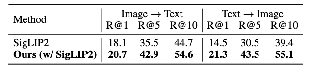

Contrastive Language–Image Pre-training (CLIP) has demonstrated strong generalization across a wide range of visual tasks by leveraging large-scale English–image pairs. However, its extension to low-resource languages remains limited due to the scarcity of high-quality multilingual image–text data. Existing multilingual vision–language models exhibit consistently low retrieval performance in underrepresented languages—including Czech, Finnish, Croatian, Hungarian, Romanian—on the Crossmodal-3600 (XM3600) benchmark. To address this, we propose a lightweight and data-efficient framework for multilingual vision–language alignment. Our approach requires no image–text pairs or text-text pairs and freezes both the pretrained image encoder and multilingual text encoder during training. Only a compact 1.7M-parameter projection module is trained, using a contrastive loss over English representations as semantic anchors. This minimal training setup enables robust multilingual alignment even for languages with limited supervision. Extensive evaluation across multiple multilingual retrieval benchmarks confirms the effectiveness of our method, showing significant gains in five underrepresented languages where existing models typically underperform. These findings highlight the effectiveness of our pivot-based, parameter-efficient alignment strategy for inclusive multimodal learning




TBA